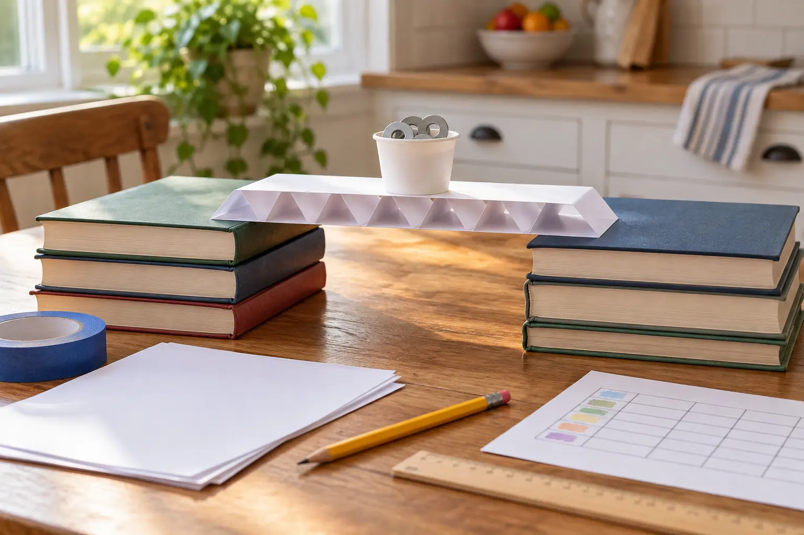

Keep constant
Paper size, paper count, span width, support height, cup position and load pieces.
AT HOME · 25 MINUTES · SCHOOL-AGE STEM
Give every design the same paper, span and loading method. The goal is not a heroic stack—it is a fair test, one useful failure and a better second bridge.

How can the same sheet of paper carry more load when its shape changes? A flat sheet across a gap bends quickly. Folding, rolling or corrugating the sheet can change how material is distributed and how the model resists bending. The family does not need to memorize engineering vocabulary before building. Start with a prediction, run a fair test, then explain the evidence.
Science Buddies’ paper-bridge activities use the same core idea: change the paper’s form, test how much load it carries and compare strengths and weaknesses. This version is designed for one adult and one or two school-age children on a school night. It uses a low, non-destructive setup and one redesign round.
Do not use glass, sharp hardware, batteries, coins a young child may mouth, tall book towers or a heavy bucket. The adult controls small parts and the load. If younger siblings are present, substitute large blocks that cannot be swallowed and reduce the target load.
The hero image shows a neat setup, not a required design. Use the family’s actual books and a load light enough that failure is boring. If a support wobbles, fix the support before testing the bridge.
Show one flat sheet across the gap. Ask each child to predict what will happen and why. Write the prediction before adding a load. Then test the flat sheet with one counter at a time. Stop when the sheet touches the table, the cup slides, a support moves or the adult sees an unsafe condition. Record the number held for five seconds.
Give the child one new sheet. They may make a long channel by folding up the sides, accordion-fold the sheet, roll it into one or more tubes, or invent another form. If tape is allowed, pre-cut an equal small allowance for each design. The bridge must rest on both supports without being attached to the books or table.
Place the cup at the center. The adult adds one identical counter at a time, pauses briefly, and counts aloud. No one touches the bridge during the test. Stop at the first clear failure or safety limit; do not keep loading a damaged bridge. Record the result and one observation: bent in the middle, sides spread, tube rolled, cup tipped or support moved.
Ask what evidence suggests. If the middle sagged, could the design become deeper? If the sides spread, could a fold lock them? If the cup tipped, could the load platform become flatter without adding more paper? Change one feature, not everything. This is the useful part of the experiment.
Reset the supports to the marks, use the same cup and counters, and load at the same pace. Record the second result. A lower number is still data. Ask whether the redesign changed the intended failure mode or created a new one.
Circle the strongest evidence-based idea, recycle clean paper and return the books. Save the result sheet if the child wants a second session. End while curiosity remains; this does not need to become a weeknight science fair.
| Design | What changed | Load held for 5 seconds | First failure observed |
|---|---|---|---|
| Flat sheet | Baseline | _____ | _____ |
| Design one | _____ | _____ | _____ |
| Redesign | _____ | _____ | _____ |
This reusable table is today’s authority asset: it makes the activity repeatable, comparable and easy for a teacher, library program or parent to cite. It also teaches the difference between a claim (“accordion is strongest”) and evidence from one controlled family test (“our accordion design held more under these conditions”).
Ages 6–8: choose between flat, channel and accordion. Count large blocks and explain one observation aloud. Ages 9–11: sketch before building, measure the span and calculate the improvement from design one to redesign. Ages 12+: limit tape by length, record bridge mass if a scale is available, or compare load-to-bridge-mass ratios without increasing the safety limit.
Adults should adjust for attention, fine-motor ability and frustration, not just age. A child can be the recorder, loader, designer or photographer. Nobody has to be the folder every round.
Low-energy version: test one flat sheet and one folded channel, then ask which shape changed the result. No tape: folds and rolls only. No washers: use identical wooden blocks or small erasers. No ruler: use one book width as the fixed span. Child does not want failure: set a modest adult safety limit and call the test complete before collapse; the observation can be deflection rather than destruction.
If the family wants another controlled-light experiment, use the 30-minute flashlight shadow lab. For a quieter observation task, try the 20-minute sound map. The library-night plan is the best follow-up when a child wants bridge books instead of another build.
Do not tell children that one paper form proves a real bridge type is universally strongest. Full-size bridges depend on material, span, loads, connections, supports, environment, redundancy, codes and professional engineering. The model shows that shape affects behavior under one small controlled test. It is not a design method for anything that carries a person, pet or valuable object.
Do not turn the counter total into a competition between siblings. Compare each design with its own prediction and revision. The win is a better explanation, not the tallest risky stack.
Modify the activity when small parts, paper cuts, motor skills or frustration create a barrier. Skip load testing around toddlers unless every counter is too large to swallow and an adult maintains control. Families who need a zero-cleanup evening can use the living-room picnic or place a ten-minute experiment block into the family calendar reset for another night.
MAKE THE DAY COUNT
Build the plan your family can finish well, then leave enough energy for the next part of the day.
More family plans